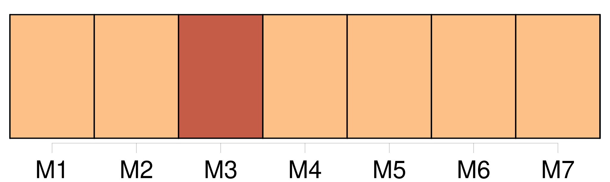

Longueur nb maillons : 25 mentions |
 |
— « Un soir — il y a quatorze ans de cela — [un de mes amis] , Jean Demers, arriva chez moi. [Il] venait de perdre [sa] femme qu' [il] adorait, et [lui -même] , se croyant atteint d'un mal qui ne pardonne pas, partait dans quelques heures, pour aller vivre le peu de temps qu'il [lui] restait à passer sur la terre au pays où [il] était né, et où [il] n'avait plus aucun parent. Avant de s'en aller mourir là-bas, [il] avait voulu me confier [sa] fille, qui avait l'âge de la mienne, six ans. [Il] me fit promettre de l'élever selon [sa] fortune, qui était considérable, et me [remit] un portefeuille bien rempli. Je promis tout ce qu' [il] voulut, puis, lorsqu' [il] se fut éloigné après avoir pressé [sa] fille dans [ses] bras, je comptai les valeurs, sans m'occuper de l'enfant qui pleurait en appelant [son père] …… [7 phrases] Je dis donc à la petite que j'allais la ramener à [son père] et je m'acheminai vers les quais, où elle me suivit sans résistance. [2 phrases]
Le soir même le bateau partit, et l'enfant de [mon ami] appartenait désormais au capitaine Laurent. Tout me réussit, pendant plusieurs années, mais il y a deux ans, je reçus une lettre de [mon ancien ami] , Jean Demers!! … [Il] était guéri et m' [annonçait] [son] retour …… Affolé par la nouvelle, je décidai de fuir la juste colère de [celui que j'avais trahi] , et je pris passage à bord du « Queen of the Waves », qui fit naufrage sur les côtes d'une île inconnue. |
|
Il est possible de télécharger la ressource sur la page Ortolang |
Si vous avez des questions ou vous voyez des erreurs, merci d'envoyer un mail à silvia.federzoni89@gmail.com |